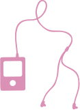

Ny. Looks é reconhecida na categoria de modeladores, graças à qualidade e
eficiência de seus produtos. Os géis da marca estão disponíveis em 4 fatores
de fixação e possuem ação condicionante que, além de modelar os cabelos,
os mantém hidratados e bem tratados.